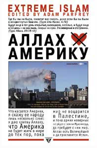

Адам Парфрей (сост.) • Аллах не любит Америку • non-fiction • 25.04.2003

После 11 сентября 2001 фундаменталистский ислам оказался в центре внимания СМИ, политиков, исследователей и простых людей всего мира. Но несмотря на все внимание к этому религиозно-политическому движению, что мы знаем о нем, кроме общих утверждений? Восполнить этот пробел призвана эта книга, представляющая собой антологию фундаменталистской исламской мысли и пропаганды, освещающей все основные направления и течения, составляющие это многоликое и противоречивое движение.
Пресса
Артур Печенегов. Рецензия на книгу «Аллах не любит Америку» (urbi.ru)
У книг, также как и у людей, бывают разные судьбы. Если это верно, то антологии исламской мысли и пропаганды “Аллах не любит Америку” под редакцией Адама Парфрея судьба предстоит нелегкая. Как только 25 апреля издательство “Ультра. Культура” отпечатало 10 тысяч экземпляров, к ней успел прочно приклеиться ярлык книги “спорной” и даже “провокационной”. Уже беглое знакомство с ней заставляет признать, что это правда. Спектр жанров и тематик достаточно широк: от рассказов об убийствах русских солдат исламскими наемниками в Чечне, инструкций теологического характера, найденных у террористов, захвативших самолеты 11 сентября 2001 года, и списка запретов Правительства талибов для женщин – до описания мусульманского рая и ада. Впечатляют, а зачастую и шокируют, названия отдельных глав: “Вы сделали меня живою бомбою”, “Сибирская язва должна быть запущена в системы водоснабжения США”, “Убивайте при помощи ядов и химического оружия”, “Тема: “сукин сын” ли Бен Ладен?”.
Неудивительно, что сразу после выхода книги СМИ начали обсуждать ее экстремистский характер. Апофеозом стал сюжет НТВ, где сообщалось, что “жители Екатеринбурга могут в домашних условиях изготовить отравляющие вещества, грамотно подготовить теракт или убийство”. 4 мая сотрудники ОБЭП УВД Екатеринбурга изъяли весь тираж из магазина “100 000 книг”. Через пару дней книга снова оказалась в продаже. Как заявили представители УВД, тираж никто не изымал, книгу просто “взяли почитать” на наличие в ней состава преступления. Эффект мероприятия не заставил себя долго ждать: никому не интересную до изъятия книгу стали разбирать.
Редактировавший русское издание Илья Кормильцев (экс-поэт свердловской группы “Наутилус Помпилиус”) заявил, что поражен невежественностью отдельных журналистов, которые начали всерьез говорить о разжигании межнациональной розни. Отрицать факт, что книга по характеру экстремистская, невозможно в силу того, что подзаголовок на обложке гласит “extreme Islam”. Буквально на каждой ее странице фигурируют смерть, убийства, насилие и т.д. Однако не глупо ли обвинять в разжигании межнациональной розни издание, ставшее бестселлером в США?
Когда проходит первичный обвинительный рефлекс, взору читателя предстает совсем иная книга и совсем иные проблемы. В определенный момент возникает осознание, что исламская угроза вовсе не является выдумкой, и что час от часу она все ближе и ближе. Одна из целей выпуска антологии, заявляемая Адамом Парфреем во вступлении, заключается в том, чтобы читатель мог оценить весь вред формирования в СМИ понятия “экстремистского ислама” и самостоятельно решить для себя, “является ли святой Коран гласом, призывающим к умеренности, или инструкцией для экстремиста”. С подачи СМИ многие россияне, и не только они одни, представляют себе исламский мир, разделенный на две половины: есть “умеренные” мусульмане, с которыми можно водить дружбу, и есть экстремисты, против которых следует всеми силами бороться. Следуя логике деления мусульман на “плохих” и “хороших”, государственные деятели демократических государств старательно выбирают себе правильных партнеров. В исламском мире формируется другое деление, в основе которого лежат два разных понимания умеренности. Умеренность фундаменталистов, и вообще ислама как такового, основывается на строгом прочтении и следовании букве Корана, так что “умматун уаста” (средняя нация: “умма” означает “умеренный или средний”) занимает срединное положение среди других стран. Западным странам гораздо больше нравится другая умеренность, та, которая позволяет трактовать Коран в зависимости от представлений о демократии и текущей политической ситуации. Общий пафос антологии призывает понять, что, как таковая, угроза исходит не от “радикального ислама”, которого фактически не существует, а от подлинного и изначального ислама.
В заключение стоит отметить, что издательство “Ультра. Культура” в апреле выпустило другую “спорную” книгу – “Марихуана: запретное лекарство”, в которой подробно описываются все известные медицине способы использования наркотика, а также готовит к изданию двухтомную антологию анархизма и левого радикализма.
Рецензия на книгу «Аллах не любит Америку» (ummah.ru)
Вот уже в течение двух-трех веков представители западной цивилизации, будь то иудеи, протестанты, католики или атеисты, пытаются понять Ислам как извне, так и изнутри, создав тем самым целые научные дисциплины, исследовательские институты, аналитические центры, учебные пособия и огромный пласт многожанровой литературы. Вот и еще одна попытка «понять», как сказано на обложке этого странноватого издания, предпринята группой неясного происхождения во главе с неким американцем, мрачноватым на лицо, Адамом Парфреем.
Странности начинаются уже на обложке: над фотографией горящей башни ВВЦ в Нъю-Йорке процитированы выдранные из контекста два аята Священного Корана, психологически настраивающие читателя на волну исламофобии, под фотографией – клятва Усамы бен Ладена в ненависти к Америке. Заглавие книги, очевидно, сдублировано с англо-американского языка символики: вместо слов «не любит» стоит значок перечеркнутого крест-накрест сердечка. Еще одна странность: английский подзаголовок, вынесенный в том числе и на обложку русского издания, не переведен на русский язык (“Extreme Islam” – «Экстремальный Ислам»).
Дальше – больше. Адам Парфрей и Ко пытаются не просто понять Ислам, но замахиваются на гораздо более серьезный уровень – они выискивают, есть ли указания на неизбежность терроризма и экстремизма, фанатизма и всеохватной войны с неверными в Священном Коране. По крайней мере, так указано на форзаце книги. Содержание ее, однако, уходит далеко от заявленных целей. Вначале читателю предлагается несколько статей по частным вопросам фикха (мусульманского богословия) и акиды (система вероубеждений) – очевидно, по правилу «врага надо знать в лицо». Акценты несколько смещены в область, не оставляющая равнодушным любого читателя, тем более малознакомого с канонами традиционных религий (любых!) – 1) вопросы полового влечения и взаимоотношения полов; 2) религиозные аспекты мученичества; 3) богословские наставления в завещании; 4) высказывания Пророка, с.а.в., о райских гуриях; 5) правила ритуального очищения и молитвы. Все это объединено в раздел «Рай». Итак, немусульманин уже составил свое впечатление об Исламе – жестокая, регламентирующая буквально все на свете вплоть до интимных отношений, требующая чуть ли не самоубийств религия одурманенных и эротически невоздержанных фанатиков. Все это, как и вся книга в целом, снабжено многочисленными иллюстрациями, подобранными по лекалам пропагандистов. Вот так, выдергивая из контекста отдельные главы и цитаты богословских трудов, вообще не имеющие отношения к общественно-политической действительности, можно скомпрометировать и иудаизм («Протоколы сионских мудрецов» и т.д.), и католичество (в православных изданиях), и православие (в католических изданиях), и любую другую религию. Поистине, «провокация сильнее убийства», как сказано в Священном Коране.
В этом же разделе «Рай» почему-то (?!) представлены и еще три материала, уже не имеющие отношения к богословию: содержание беседы Верховного муфтия Иерусалима с А.Гитлером в 1941 г. (так вот ОНИ какие!), анти-сионистская статья (редакторы объективны!), и материал самого Адама Парфри (теперь уже так пишется имя) о гонениях евреев в Палестине в до-израильский период.
Такое подробное описание только одного, первого раздела книги, дается нами для того, чтобы читатели знали, с кем они имеют дело. Издатели сборника, испытывающие какую-то подсознательную, причем многолетнюю, неприязнь к Исламу, прикрываются всего лишь техническими составителями, сведшиим воедино разносторонние материалы с равноудаленных позиций. Конечно, объективностью здесь и не пахнет, поскольку большинство статей снабжены едкими и язвительными комментариями. Несмотря на такой подход, мы рекомендуем читателям ознакомиться с содержанием книги. Подобно советскому периоду нашей истории, когда наши деды и отцы могли узнавать об Исламе только по атеистическим исламоведческим трудам, также и мы сегодня лишены элементарных знаний обо многих процессах, происходящих в мире, в т.ч. в мире Ислама. Сборник «Аллах не любит Америку», как ни странно, дает нам такую редкую возможность.
Действительно, разве не интересно узнать, о чем говорили Гитлер и муфтий Иерусалима? Геноцид арабов в Палестине (один из семи разделов сборника так и назван – «Палестина») малознаком нашему лишенному объективных представлений об этом регионе читателю – так же, как и происходившая при явном попустительстве британцев резня евреев в 1929 г. Из-за односторонней поддержки Россией сербов в 1990-х гг. мы совершенно лишены информации о страшных, невообразимых человеческому уму преступлениях, творившихся в отношении боснийских мусульман. Интересны также (хотя и совершенно неуместны) статьи об американских т.н. «черных мусульманах», использующих по своему усмотрению цитаты из Корана и Библии для создания собственной, расистской идеологии. А знаете ли вы, к примеру, что в 1968 г., через год после захвата Восточного Иерусалима израильтянами, орден Американского масонского храма предложил $ 100 000 000 за разрешение на строительство «Храма Соломона» на Храмовой горе – месте, где находится третья святыня Ислама, мечеть Аль-Акса?
Показательно, что кем бы не были составители сборника, они явно чувствуют эпицентр борьбы исламских и антиисламских сил – центральная, «осевая» глава книги, «Храмовая гора», повествует о попытках фундаменталистов (на сей раз иудейских, масонских и нео-протестантских), разрушив мечеть Аль-Аксу, выстроить на ее месте «Третий Храм». В статьях этой главы фигурируют незнакомые нам христианские сионисты из США, финансирующие «будущее строительство Храма» с тем, чтобы приблизить появление Антихриста, который – по их вероубеждению (с ума сойти от их логики!) – «должен быть мужчиной-иудеем» (с.230).
Рискуя вызвать критику читателя за слишком развернутую рецензию, хотелось бы все же привести цитаты из крайне интересного материала, представленного в сборнике. Это интервью духовного лидера движения сопротивления «Хамас» шейха Ахмеда Ясина, в конце которого шейх говорит: «[Все прогнозы на будущее] основаны на чтении Святого Корана и на исторических подсчетах. Всемогущий Аллах меняет поколения и природу людей каждые 40 лет. Это видно и на примере еврейской истории (…) Период с 1948 г. по 1987 г. был первым сорокалетием и завершился восстанием палестинского народа во время первой интифады. (…) наши люди, напуганные сионистской пропагандой и спасавшиеся бегством из собственных домов в 1948 г. после показательной резни, сегодня начали бороться с врагами, бросая камни. Следовательно, за 40 лет палестинцы изменились, и мы верим, что еще через 40 лет сионистское сообщество будет разрушено и уничтожено волей Всевышнего. (…) Не обязательно это должно произойти в 2027 г., может быть (…) раньше или (…) позже, [но] примерно в 2027 г., и еврейское государство закончит свое существование, Инша Аллах». (с.213).
Обращаем также внимание читателя на чрезвычайно интересный материал основателя Мурабитского движения с центром в Шотландии шейха Абдулькадира аль-Мурабита (с.337-350), и его последователя А.Томсона. Поистине, рецензируемую книгу стоит приобрести даже хотя бы для того, чтобы прочитать только лишь этот, продуманный до единой буквы, глубочайший философский текст.
Яков Шустов. Рецензия на книгу «Аллах не любит Америку» (aglob.ru)
Еще до выхода в свет русского перевода книги Адама Парфрея, про Аллаха, который не любит Америку, вокруг издания началась цензурная истерика. Екатеринбургские силовики, на манер пожарных из «451 * по Фаренгейту», съехались к типографии на улице Тургенева, где лежал тираж экстремистской книжки (см. обложку), побрякивая спичками в карманах. Мусульманское духовенство внесло «Аллах не любит Америку» в список ста книг, которые нельзя читать правоверным. Адам Парфрей теперь может гордиться своим соседством с Салманом Рушди. В столицах пока книга продается без последствий. И ее можно купить и даже прочитать.
Что же на самом деле представляет собой книга «Аллах не любит Америку»? Сборник интернетовских текстов, антологию современной фундаменталистической исламской пропаганды и, что не маловажно, контрпропаганды. В предисловии, единственный текст в книге написанный самим Парфрейем, автор-составитель совершенно недвусмысленно пишет: «Говорят, что знание сила. Жаль, что у наших спецслужб с их сорокамиллиардными бюджетами не хватило проницательности, для того чтобы понять, что после взрыва в ВТО в 1993 году, нападений на американские посольства и корабли ВМС США, призывов Усамы бен Ладена в 1998 году убивать всех американцев, бен Ладен и его сторонники лишь ждали удобного момента, который и наступил 11 сентября 2001 года. После того как я увидел по телевизору ужасающие результаты этой акции, я подумал о том, не руководствовались ли ее организаторы следующими строками из Корана: «Где бы вы ни были, захватит вас смерть, даже если бы вы были в воздвигнутых башнях» (Сура Аль-Нисаа, 4:78). Проще было бы написать – врага надо знать в лицо, а данная книга пособие для добровольных помощников FBI и CIA.
Поскольку многочисленные сайты исламских экстремистов были закрыты после событий 11 сентября, а Адам Перфрей, как трудолюбивый сурок, сохранил их материалы в своих закромах, то книга представляет собой просто информационный клад для читателя.
Невнятное бормотание СМИ о таинственных «вах-хоббитах» и скудные сведения о таких фигурах, как бен Ладен, которого, как Йети или Лох-Несского змея, «окромя, как на картинках» никто не видел, не могут дать четкой картины современных форм фундаменталистских и экстремистских направлений ислама.
Не стоит забывать, что исламское сопротивление, является, на данном этапе, одним из наиболее действенных ответов на глобальную экспансию США. И если Аллах, тоже не любит Америку, то – «Аллах акбар!», дорогие товарищи.
Лев Пирогов. Рецензия на книгу «Аллах не любит Америку» (Exlibris)
Поэт-культуртрегер Илья Кормильцев, автор стишков “В которой я не буду никогда…” для группы “Наутилус Помпилиус” (см. художественно-публицистический фильм “Брат-2”) издал замечательную книжку “Аллах не любит Америку” в замечательном издательстве “Ультра. Культура”, которым он морально руководит.
Путь книги к благодарному русскочитающему читателю был тернист и извилист. Начать с того, что информаторы ФСБ усмотрели в ней “призывы к подрывной деятельности” и “пропаганду международного терроризма”. По факту издания, в которое наряду с прочими текстами подрывного и международно-террористического содержания вошла глава с подробными рецептами приготовления рицина, абрина и лягушачьего яда (sic), было возбуждено дело и начато следствие. Книга подверглась экспертизе, в ходе которой все вышеперечисленные яды были приготовлены и опробованы на добровольцах. В результате обнаружилось, что их действие совпадает с действием коктейля “Слеза комсомолки”, рецепт приготовления которого приведен в книге классика советской литературы Венедикта Ерофеева “Москва-Петушки”. Обвинения были сняты, и вредная книжка появилась на прилавках, откуда ей теперь прямая дорога в руки к исламским фундаменталистам и детям.
Фундаменталисты вряд ли узнают из нее много нового, а вот дети, обдумывающие житье, положительно будут фраппированы. Книга представляет собою сборник мусульманских религиозных наставлений (как подмываться, как делать зарядку, как давать деньги в долг), политических документов (официальное обращение Великого муфтия к Адольфу Гитлеру) и публицистических текстов, из которых особо выделим статью Глабб-Паши о ближневосточном кризисе и отрывок из книги иранского марксиста Джалаль Аль Ахмада “Оксидентоз: Чума с Запада”, спровоцировавшей в свое время Великую исламскую революцию.
Полный перевод этой чудесной книги был бы куда полезнее, чем перевод по-американски рептильной (разжеванной, как туалетная бумага в “Макдоналдсе”) книжонки про яды. Сила, как известно, не в ядах, она в правде.
“Оксидентоз” был запрещен шахом Ирана после первого издания в 1963 году. Запрещен за такие, казалось бы, безобидные пассажи: “Больной оксидентозом живет за счет слов и подачек с Запада. Он не имеет никакого отношения к тому, что творится в нашем маленьком мире, в нашем уголке Востока… Если он интересуется литературой, то все, что его заботит, так это кто получил в этом году Нобелевскую, Гонкуровскую или Пулитцеровскую премию… Он стремится узнать лишь то, что некий востоковед сказал или написал по вопросам, относящимся к его областям специализации… Это самый отталкивающий симптом оксидентоза: не думать вообще, передавать всю власть над своими чувствами первой попавшейся авторучке, лишь бы ее держал доходяга, сказавший или написавший хотя бы слово в качестве ориенталиста”.
О том, что представлял собою дореволюционный Иран, наш расслабленный незарядкой читатель знает по роману Кристиана Крахта “1979”. Это была “нормальная” страна для “нормальной” жизни, послушный экспортер нефти и восточной экзотики. Идеал современной России, лезущей, задрав штаны, в “цивилизованную Европу”. Замените в вышеприведенной цитате слово “ориенталисты” на “слависты”, и получится картина нашей интеллектуальной жизни по версии издательства “НЛО”, увенчанного только что Государственной премией.
Книга “Аллах не любит Америку”, составленная и прокомментированная американцем Адамом Парфреем, исподволь отвечает на вопрос о том, почему через каких-нибудь 20 лет в “цивилизованной Европе” жить будут одни арабы, Сибирь отойдет к китайцам, а Польшей станет управлять афроамериканский генерал-губернатор. Если идолы благосостояния и удовольствия заменяют народу Веру, этот народ стирается. Демографическая слабость, о которой любят толковать западные алармисты, не возникает на пустом месте.
О душе думать нужно. Делать зарядку и правильно подмываться.
Дмитрий Быков. Рецензия на книгу «Аллах не любит Америку» (Новый мир)
То же издательство, и тут уже скандал был настоящий, громкий — что в Штатах, когда антология Парфрея увидела там свет в прошлом году, что у нас, когда ее издали в отличных переводах Энсани, Богдановой, Борисова и других. Книжечка чрезвычайно амбивалентная — с одной стороны, замечательный свод абсурдных, жестоких, трагифарсовых документов, свидетельство пещерной ненависти и тупой непримиримости, а с другой — страшное предупреждение о том дивном новом мире, в который мы вдруг шагнули. Цивилизация, где жизнь стала значить больше всего, породила симметричного и в чем-то равного врага — цивилизацию, в которой жизнь не стоит ровно ничего. Многие (иногда и я) утешают себя мыслью, что исламский терроризм существует до тех пор, пока существуют высокие цены на нефть — главный ресурс арабского мира; пока можно оплачивать подвиги звонкой монетой — осыпая ею, правда, уже родственников покойного. Оказывается, главный ресурс все же — далеко не монета и не обеспечившая ее нефть. Есть, еще есть самоотверженные фанатики, идейные борцы. И не в нефти дело, а в нашем повальном попустительстве и разложении: вот их главный ресурс, если кто пока не понял.
Каким будет главное противостояние нового века, уже понятно. Чем все кончится, тоже понятно. Всегда так кончается. Вопрос только — какова будет цена победы на этот раз. И на сколько десятилетий хватит Западу заряда пассионарности, прежде чем он снова расслабится и тем породит очередную убийственную силу — марширующую толпу фанатиков, одержимую идеей нравственной и религиозной чистоты.